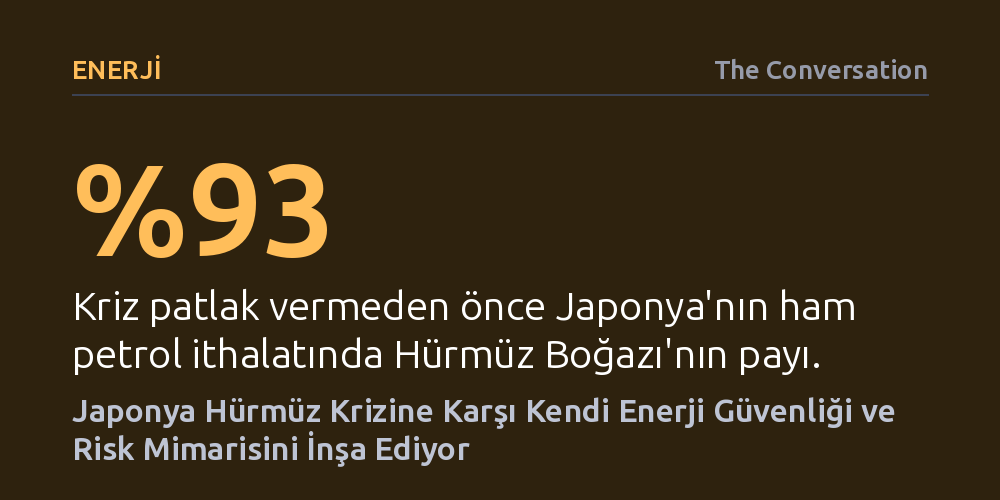

ENERJI · The Conversation · 2026-09-12
Hürmüz Boğazı'nın kapanmasıyla petrol tedariki darbe alan Japonya, POWERR GX paketiyle devlet destekli reasürans, stratejik rezervler ve alternatif boru hatları üzerinden bağımsız bir enerji güvenliği mimarisi kuruyor. Tokyo bu adımlarla, kriz anlarında yalnızca ABD güvencesine ve piyasalara dayanmaktan uzaklaşıyor.
Küresel krizlerde süper güç ittifaklarının dahi enerji akışını tek başına güvenceye alamadığını, devletlerin kendi egemen risk ve lojistik mekanizmalarını kurmak zorunda kaldığını gösteriyor.

2026 sonbaharında Hürmüz Boğazı'nın fiilen ulaşıma kapanması, küresel piyasalarda dalgalanmalara yol açsa da en sert darbeyi Japonya'ya vurdu. Kriz öncesinde ham petrol ihtiyacının %93'ünü doğrudan bu dar su yolundan tedarik eden Tokyo, onlarca yıldır kendi kontrolünde olmayan bir deniz güvenliği ekosistemine ne denli bağımlı olduğunu acı biçimde fark etti. Dışişleri Bakanı Motegi Toshimitsu'nun İranlı mevkidaşıyla aylardır aralıksız telefon trafiği yürütmesi, sahadaki tedarik telaşının diplomatik bir yansımasıydı.
Mevcut stratejik rezervler ve gelişmiş yerel rafineri altyapısı ilk şokun şiddetini hafifletmeye yetti; ancak kriz, Japon sanayisinin yalnızca ham petrolde değil, petrokimya girdisi olan naftada da ne denli kırılgan olduğunu gözler önüne serdi. Nafta tedarikindeki tıkanıklık nedeniyle Japon üreticilerin ambalaj ve baskı süreçlerini sadeleştirmek zorunda kalması, modern sanayi zincirinin en temel hammadde darboğazlarına dahi dayanıksız olduğunu kanıtladı.
Krizin ilk günlerinde yaşananlar, askeri çatışmaların deniz ticaretini fiili bir ablukadan bile önce nasıl felç edebileceğini belgeledi. Çatışmalar başlar başlamaz uluslararası reasürörler poliçelerdeki 72 saatlik iptal maddelerini devreye soktu; bölgeye giren gemiler harp riski kapsamından çıkarıldı ya da astronomik primlerle karşılaştı. Deniz sigortası piyasasının çekilmesi, Hürmüz'ü ticari açıdan anında kullanılamaz hale getirdi.
Japon hükümetinin buna yanıtı, Başbakan Sanae Takaichi yönetiminin duyurduğu POWERR GX paketi kapsamında bir devlet reasürans mekanizması kurmak oldu. Özel sermayenin taşımaktan kaçındığı harp riskini doğrudan devletin üstlendiği bu model, İngiltere'nin I. Dünya Savaşı'nda karşılaştığı sigorta krizini aşmak için benimsediği ve nihayetinde 1939 tarihli kanunla kurumsallaştırdığı yaklaşımla büyük benzerlik taşıyor. Böylece Japon bayraklı veya Japonya'ya enerji taşıyan tankerler, özel sigorta piyasaları çekilse dahi kamu güvencesiyle seyrüseferine devam edebilecek.
Tokyo'nun savunma kalkanı yalnızca sigorta güvencesiyle sınırlı değil. Ekonomi, Ticaret ve Sanayi Bakanlığı (METI), rafineriler ve ticaret devlerinin ortaklaşa katkı sağlayacağı bir risk havuzu fonu oluşturdu. JOGMEC üzerinden yönetilen bu fon; Hürmüz'ü tamamen devre dışı bırakan Suudi Arabistan Doğu-Batı hattı, BAE'nin Habşan-Füceyre boru hattı veya Ümit Burnu üzerinden dolanan uzun rotaların getirdiği yüksek navlun ve sigorta maliyetlerini sektör genelinde sübvanse ediyor.
Bununla birlikte Japonya, Körfez üreticilerinin Hürmüz'e olan mecburiyetini azaltacak altyapı projelerini bizzat finanse etmeye başladı. Suudi Arabistan ve BAE'nin ihracat boru hatlarını genişletme çağrılarına yanıt veren Tokyo, devlet kurumu JOGMEC'in yetki alanını denizaşırı altyapı yatırımlarını finanse edecek şekilde genişletti. Aynı zamanda 90 günlük uluslararası ham petrol rezervi standardını naftayı da kapsayacak biçimde yenileme ve Japon topraklarında doğrudan ABD menşeli petrol depolama planları devreye alındı.
Alınan bu tedbirler Japonya'nın direncini artırsa da ülkeyi Körfez bağımlılığından bütünüyle kurtarmaya yetmiyor. BAE'nin Füceyre hattının kapasitesini günde 3,6 milyon varile çıkarma hedefi gibi devasa yatırımlar dahi, Hürmüz'den normalde akan günlük yaklaşık 20 milyon varillik hacmin ancak küçük bir kısmını karşılayabiliyor. Üstelik çatışmalar sırasında Füceyre terminalinin de hedef alınması, alternatif karasal koridorların da mutlak güvenlik sunmadığını gösterdi.
POWERR GX paketinin uzun vadeli diğer ayağını oluşturan nükleer enerji hamlesi ise kriz günlerine çare üretmekten çok uzak. METI 2050'lere kadar 14 yeni reaktör inşa etmeyi planlasa da, bugün çalışabilir durumdaki 33 reaktörden yalnızca 12'si devrede bulunuyor. 2011 Fukuşima felaketinin toplum hafızasında bıraktığı derin güvensizlik ve yakıt depolama sorunları devam ediyor; nitekim dünyanın en büyük santrali Kashiwazaki-Kariwa'nın yeniden başlatılması bile kitlesel protestolarla karşılaştı. Stratejik rezervler aylık direnç sağlarken, nükleer enerjinin devreye girmesi onlarca yıl gerektiriyor.
Japonya'nın geliştirdiği strateji, bölgedeki bir diğer büyük enerji ithalatçısı olan Güney Kore ile kıyaslandığında çok daha net anlaşılıyor. Seul yönetimi, petrolünün %70'ini Ortadoğu'dan almasına karşın benzer bir kriz karşısında iç piyasayı korumak için çareyi beş aylık nafta ihracat yasağı koymakta buldu. Uzmanların 'müttefik paradoksu' olarak tanımladığı bu durum, Washington ile kurulan sıkı askeri ittifakın, kriz patlak verdiğinde müttefik ülkenin İran ile diplomatik temas kurmasını ve Pekin'in elde ettiği türden geçiş muafiyetleri sağlamasını engellediğini ortaya koyuyor.
Japonya ise bu açmazdan sıyrılmak adına faturayı sektörle paylaşan, finansal riskleri üstlenen ve bölge dışı altyapıyı bizzat finanse eden egemen bir yapı kuruyor. Washington ile askeri ittifak baki kalsa da Tokyo, enerji güvenliğini artık yalnızca müttefikinin sağladığı koruma şemsiyesine veya serbest piyasanın insafına bırakmıyor. Kendi finanse ettiği ve kendi yönettiği paralel bir kriz mimarisi inşa ederek, ittifakın sınırları içinde daha yetkin ama aynı zamanda daha özerk bir aktöre dönüşüyor.